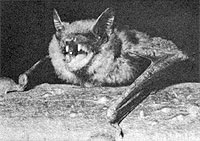
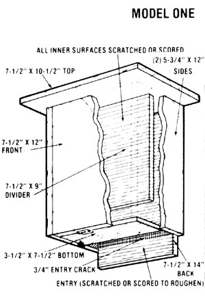
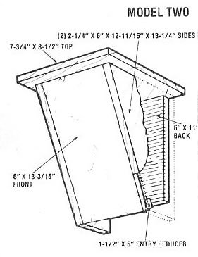

You can become part of a new and important conservation project . . . one that will help control insects around your home and -
perhaps - save an endangered mammal.
People who reside near rivers, swamps, lakes, or ponds can usually expect high insect populations. But, if they're lucky, such folks will discover that the bugs are kept in check by local colonies of bats . . . which swoop out of their roosts each evening and locate their pesky prey with remarkably precise "radar" systems (echoes of their high-pitched squeaks return to them whenever the sound waves encounter solid objects). During the summer months, bat colonies consume mosquitoes, gnats, moths, and beetles, thereby playing essential roles in the ecosystem. In fact, some of the little predators eat as much as half their body weight in insects each night!
Unfortunately, however, these nocturnal hunters aren't seen in the night skies as often as they were some 35 years ago . . . because they've suffered, as many insectivorous (and other!) birds have, from the effects of DDT. And though this deadly pesticide has been banned from general use in the United States since 1972, it's sometimes still, illegally, dumped into attics as "bat control" (although the poison probably endangers the human occupants of treated residences almost as much as it does the winged population it's meant to kill or evict).
Furthermore, as if residual DDT (and the continuing "outlaw" use of the chemical) in the United States weren't bad enough, bats have no awareness of national borders. As reported in Bits and Pieces in MOTHER NO. 58, the Carlsbad Caverns' bat population decreased from an estimated 8.7 million in 1936 to 200,000 in 1973 . . . and is still being reduced as a result of the mammals' annual migration to Mexico, where DDT is still in regular use.
While many bats fall to such poisons, others are prey to the deeply ingrained fears and misunderstandings of humans who wantonly destroy their roosts or carelessly disturb the animals in their hibernation caves. The latter action can be particularly harmful, because - when hibernating - bats fall into a deep torpor and live off small reserves of stored fat. If they're aroused unnecessarily, the animals use up their "rations" too rapidly, and may well starve in their sleep before the spring awakening.
So far, three bat varieties are on the U.S. endangered species list . . . two more have been proposed for listing . . . and still others are probably in need of protection. (Being on the list doesn't insure the survival of a species, but does provide some habitat protection.) Bats that may shortly become extinct are the Indiana ( Myotis sodalis ), the Gray ( Myotis grisescens ), the Hawaiian Hoary ( Lasiurus cinereus semotus ), the Virginia Big-Eared ( Plecotus townsendii virginianus ), and the Ozark Big-Eared ( Plecotus townsendii ingens ).
In the Western world, bats - although they're, for the most part, harmless and may well be the most effective natural insect controls in existence - have long been feared. This human reaction probably stems from the fact that medieval artists often attached bat wings to figures representing devils and demons ... as well, of course, as from the animals' connection with the Dracula legend.
Other cultures, however, have long recognized how important the tiny mammals are to the planet's health. Pre-Columbian societies, both in Mexico and in Central America, celebrated the winged wonders in their religions and represented them in their artifacts . . . and - in the East - bats are considered good omens and symbols of longevity. (Though most small mammals have short life spans, one bat is on record as having survived 30 years in the wild.)
The fact is, nearly everything most folks "know" about bats is wrong. The animals don't get in people's hair .. . aren't aggressive, blind, or dirty . . . and have a relatively low incidence of rabies. Just keep in mind that they're extremely shy and intolerant of disturbances, so healthy bats are very difficult to catch. Those that can be approached are probably sick and should be handled by experts or with great caution, because - like most wild animals - bats will bite when frightened.
Of course, sick animals may simply be victims of chemical poisons. DDT, for example, disperses the animals from their roosts, makes them ill, and often causes their deaths far from the site of their poisoning. Furthermore, any survivors of DDT spraying will be especially susceptible to all kinds of viruses, including rabies.
In order to encourage the establishment of new bat colonies, an experimental project to provide special roosts has been begun by the Center for Action on Endangered Species. Artificial "bat caves" have already been used successfully in Europe, but they're entirely new in this country. The Center has come up with two bat-box designs, shown in the accompanying illustrations, that are simple to make out of inexpensive, rough, untreated wood. (Some Europeans have had success with painted boxes, but others feel that paint odors discourage habitation. This question won't be answered until more information is available, and you can help provide such data by putting up both painted and unpainted versions, and observing the results.)
The box's exact shape and size probably aren't important, but the width of the entry shouldn't exceed one inch (3/4 inch is ideal). Bats can get through very small spaces, and the use of a narrow opening will discourage other creatures from moving in. Also, the dwelling should be as tightly constructed as possible, because young bats grow best where daytime temperatures are in the 80-90°F range, and in environments where their body warmth is well contained.
Very little is yet known about bats' preferences as to the location of the boxes, but - according to the information now available - the best bet is to fasten them 12 to 15 feet off the ground on a building or tree trunk. (A "managed" forest, where undergrowth has been removed, is most likely a good area to place a "house".) Make sure, too, that the roosts are positioned in such a way that they'll receive morning sun and afternoon shade, since inside temperatures above 90°F will be pretty much intolerable to your hoped-for guests. In addition, most bats seem to prefer sites that are relatively well protected from the wind, and - of course - your boxes will be attractive only if located in areas with heavy populations of flying bugs.
After a summer of feeding, bats mate and hibernate in the fall, with the females storing the sperm over the winter. Once insects become available again, one or more babies (according to the species) are born and suckled for the two weeks it takes them to learn to fly. (The males move out while the young are being reared.)
In order to attract bat mothers, install your boxes by early April. Sometimes you can expect guests within a few weeks after putting up the shelters, but they may take a year or more to make use of the proffered housing.
By reporting your successes and failures, you can contribute to the small - but growing - store of bat knowledge . . . and maybe help to preserve these worthy little animals. Bat-box experimenters can obtain a free reporting form, along with additional bat information, from the Center for Action on Endangered Species, Dept. TMEN, 175 West Main Street, Ayer, Massachusetts 01432.
Let's face it - in comparison to work being done on behalf of whales, elephants, great cats, and crocodiles - bat preservation may not seem very glamorous. But humankind desperately needs these marvelous little mammals, and our misunderstood bats can certainly use some friends. Won't you be one?
|
|
|
 |
|
 |
 |
|